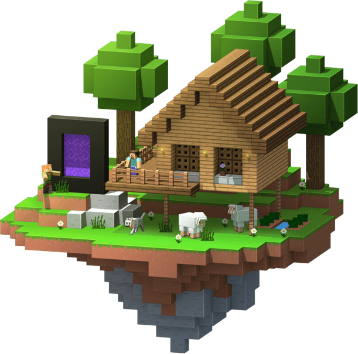

...Como se volvio famoso?
Minecraft, un fenómeno cultural en el mundo de los videojuegos, ha logrado cautivar a millones de jugadores en todo el mundo desde su lanzamiento en 2009. Su popularidad se ha consolidado no solo en el ámbito de los videojuegos, sino también en plataformas de contenido como YouTube, donde ha desempeñado un papel fundamental en el crecimiento de muchos canales y comunidades en línea.
La clave de su éxito radica en su enfoque único y altamente adaptable que permite a los jugadores explorar, crear y compartir sus experiencias en un mundo virtual sin límites. En Minecraft, los jugadores se encuentran inmersos en un vasto mundo generado proceduralmente compuesto por bloques tridimensionales. Desde su inicio, el juego se ha convertido en una plataforma para la creatividad, donde los jugadores pueden construir impresionantes estructuras, explorar paisajes infinitos y enfrentarse a desafíos únicos.
Una de las razones principales de la popularidad de Minecraft en YouTube es su capacidad para generar contenido diverso y entretenido. Los jugadores pueden compartir sus aventuras, tutoriales de construcción, desafíos de supervivencia y mucho más. Esta versatilidad ha permitido a creadores de contenido de todas las edades y estilos encontrar su nicho en la comunidad de Minecraft en YouTube.
Además, Minecraft ha sido un terreno fértil para la creación de contenido para niños y familias. Muchos padres ven en Minecraft una forma segura y educativa para que sus hijos jueguen y aprendan en línea. Los vídeos relacionados con Minecraft suelen ser vistos como contenido apropiado para todas las edades, lo que ha contribuido a su popularidad en YouTube como una opción de entretenimiento familiar.
El impacto de Minecraft en YouTube ha sido significativo en términos de crecimiento de canales y comunidades. Muchos YouTubers han construido sus carreras en torno al juego, creando contenido regular que atrae a millones de espectadores. Además, eventos como torneos, construcciones en equipo y series de juego colaborativas han reunido a grandes audiencias en la plataforma.
En resumen, Minecraft ha alcanzado un estatus icónico en YouTube gracias a su naturaleza versátil, su capacidad para fomentar la creatividad y su atractivo multiplataforma. A medida que la comunidad de Minecraft en YouTube continúa creciendo, el juego sigue siendo una fuente inagotable de entretenimiento y creatividad para jugadores y espectadores por igual.
Link a la Wiki de Minecraft